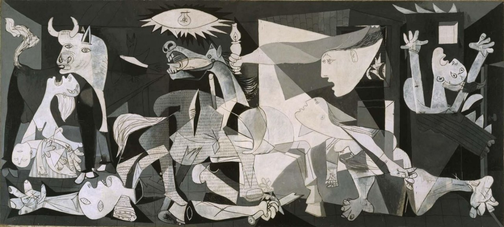

В гениальности и особой значимости этого великого испанца для искусства 20 века не возникает никаких сомнений, вне зависимости от того, нравится он нам или нет. Признанный гений. Но вот какой вопрос — а в чем конкретно заключается эта значимость? Чем объясняется воистину мистическая «популярность» Пабло Пикассо на протяжении всей его жизни и до сих пор… среди любителей и профессионалов, теоретиков и практиков, «физиков» и «лириков», академистов и новаторов? Надо признаться, ответа на этот вопрос я не знаю…


Нет, поймите правильно, я знаю много концептов и идей по этому поводу, как говориться, знаю много «слофф», но… Вламинк (поддерживая нацистов и критикуя Пикассо с позиции античной пластики) писал о том, что «Пикассо многолик и не имеет своего лица – берёт напрокат разные стили и их уродует». Действительно Пикассо многолик, ну так, таков не только он.
У Максима Кантора есть идея, что Пикассо плоть от плоти европейской культуры взял на себя смелость размежевать античную пластику, героику мифа и христианские ценности, на том основании, что к 20-му столетию эта связка мало того, что исчерпала себя, растеряв ренессансный пафос, но и привела в какой-то степени к нацизму и авторитаризму. Суждение не бесспорное, но мне кажется, не только интересное, но и глубокое, позволяющее по новому взглянуть на творчество Пикассо и вообще на модернизм. Хотя, лично мне, невероятной популярности Мастера это не объясняет.
То, что Пикассо создал новый художественный язык, опять же, сомнений не вызывает. Ну так не он один замечен в этом «безобразии»… а всё же Пикассо — есть Пикассо.
Создатель кубизма, невероятный харизматик, великолепный академист, ниспровергатель основ, коммунист, бабник, миллионер, испанский француз… и ещё куча всего. Возможно, сила его «слова» в его органичной и непреходящей противоречивости? Истинное воплощение непрекращающейся борьбы хаоса и порядка?
В 1907 году Пикассо сказал: «Надо писать не то, что вижу, а то что знаю». Мне думается, что «знал» Мастер что-то особенное, чего не знали другие. И знание для него (глядя на его постоянные трансформации) — это не существительное, а глагол!
И всё же, почему? Рorque, Рablo, porque?
Мне пришла в голову мысль об особой «дружбе» творчества этого художника с феноменом «современности».


Герника Пикассо
Современность. Мы сегодня воспринимаем современность (и стоящие за ней смыслы) как нечто само собой разумеющееся, часто не отдавая себе отчет, что эта идея носит не столько календарный, сколько содержательный характер. То есть, современность — это не просто то, что имеет место быть в некоторый текущий «момент» времени.
Вот, когда мы задаемся вопросом, «а современно ли нечто?», мы очевидно предполагаем степень соответствия рассматриваемого явления/события неким ключевым проблемам, вызовам и актуальным процессам сегодняшнего дня. А это оценочная штука, ведь сразу возникает закономерный вопрос, что считать актуальным и для кого?
И как кто-то из великих (не помню кто) хорошо сказал: современность нельзя рационально выявить, можно только почувствовать.
К чему я это все? А к тому, что Пикассо как художник, мне думается, обладал каким-то особым органом самоотождествления себя и времени, шестым чувством внерационального восприятия современности.
Если посмотреть на историю его творчества, то мы увидим, что он все время «на коне», что он постоянно на «острие атаки». Как только меняется «дух времени» меняется Пикассо, его пластика, его идеи, его техника, цветовая гамма — и в целом интенция всего творчества. Столько качественных, и своевременных заметьте, творческих трансформаций мы, пожалуй не найдем ни у какого другого мастера.
Пабло Пикассо — великий сёрфер актуального пространства вариантов, всю свою жизнь мастерски балансировавший на гребне волны осевого времени. Кто-то из художников погружался в глубины, кто-то нырял как дельфин, кто-то ставил парус и поверхностно скользил под влиянием ветра моды… Пикассо же никогда не поддавался «силе ветра», а только энергии самой волны. Укорененный в «массе культуры», уверенный в своём праве «резать пену» и всегда на виду!
Он не просто в истории искусства, он по сути и есть сама история искусства.